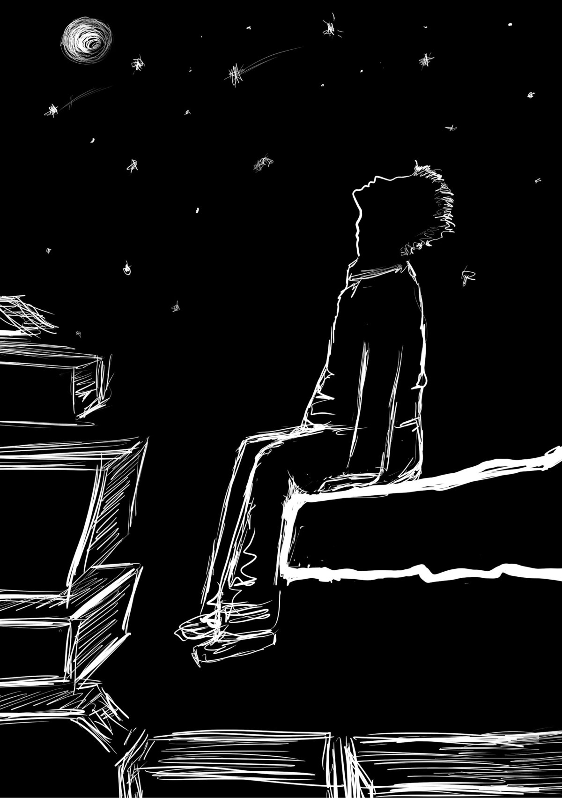

Mladi
Filozof
„Nikada važniji poduhvat nije započet — stvaranje sebe.”

Sadržaj
- 01 Zahvalnica🖼️
- 02 O njemu
- 03 Njegova najveća tajna🖼️
- 04 Mladi filozof nije hteo da odraste
- 05 Mladi filozof je tražio osećanja🖼️
- 06 Mladi filozof je osećao kada je tužan
- 07 Mladi filozof je voleo da se ljubi
- 08 Mladi filozof je previše razmišljao🖼️
- 09 Mladi filozof se igrao sa laži
- 10 Mladi filozof je danas lagao
- 11 Mladi filozof je proizvodio moć
- 12 Mladi filozof je ubijao misao
- 13 Mladi filozof se pitao da li postoji🖼️
- 14 Mladi filozof je često moj gost🖼️
- 15 Mladi filozof je upoznao duha vremena
- 16 Mladi filozof je pronašao grešku🖼️
- 17 Mladi filozof je postao čovek
- 18 Mladi filozof je ostao sam🖼️
- 19 Mladi filozof je tražio ljude
- 20 Mladi filozof je išao da studira filozofiju
- 21 Mladi filozof je noćas ostao budan
- 22 Mladi filozof je sanjao bez snova
- 23 Mladi filozof je bežao od ljudi🖼️
- 24 Mladi filozof se pretvorio u ono protiv čega se borio
- 25 Mladi filozof je bio besan
- 26 Mladi filozof je postao kamen🖼️
- 27 Mladi filozof je povraćao bol🖼️
- 28 Mladi filozof se konačno isključio
- 29 Mladog filozofa je napala melodija
- 30 Mladi filozof je gledao sunce🖼️
- 31 Tri velike rečenice
- 32 Mladi filozof je sanjao da bude slobodan
- 33 Mladi filozof je voleo svakog🖼️
- 34 Mladi filozof je ubrao cvet
- 35 Mladi filozof je bio zaljubljen u sebe🖼️
- 36 Mesec je noćas lajao na mladog filozofa🖼️
- 37 Mladi filozof je verovao
- 38 Mladi filozof je najzad osećao
- 39 Mladi filozof je znao da su svi u pravu
- 40 Mladi filozof je prerastao odrastanje
- 41 Mladom filozofu se spava
- 42 Filozofovo proročanstvo
- 43 Korice